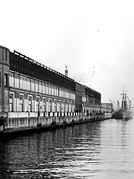

The Seven Wonders of Canada
The Canoe | The Igloo | Niagara Falls | Old Québec City | Pier 21, Halifax | Prairie Skies | The Rockies
Pier 21, Halifax, Nova Scotia
From the late twenties to the early seventies, Pier 21 was Canada's 'front door' to over a million immigrants, refugees, troops, wartime evacuees, war brides and their children. It has been compared to New York's Ellis Island, and is intrinsically linked to Canada's multicultural national identity. In 1999 the building at Pier 21was refurbished and reopened, to pay tribute to those who had passed through its doors, enriching our cultural landscape immeasurably. Now Canada's last surviving ocean immigration shed, Pier 21 explores a key part of our heritage through interactive exhibits, multimedia presentations and activities for all ages. Pier 21 hopes to officially become a National Museum, telling the story of immigration and nation-building to all Canadians.